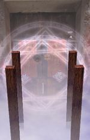

- Welcome to Touhou Wiki!
- Please register to edit. For assistance, check in with our Discord server or IRC channel.
Barrier of Life & Death
Barrier of Life & Death jɯᵝːme̞ː ke̞k̚ka̠i | |
|---|---|
|
 Barrier of Life & Death, as seen in Phantasmagoria of Flower View.
| |
| Location |
The skies of Gensokyo, between Gensokyo and the Netherworld. |
| Residents |
|
Appearances | |
| Official Games | |
| |
The Barrier of Life & Death (幽明結界 Yūmei Kekkai) is the boundary between Gensokyo and the Netherworld. The Prismriver Sisters can be found here. Not much is known about the place.
General Information[edit]
The barrier itself is a giant door with four wooden pillars emerging from the clouds. Ever since the events of Perfect Cherry Blossom, the barrier has been weak because Yuyuko Saigyouji broke it to allow spring into the Netherworld. Thus, it is rather easy to enter the Netherworld, especially if you can fly. All you'd have to do is fly over the door, since it's locked. Yukari Yakumo was supposed to fix the barrier, but she never got around to it. However, this also means that phantoms can also leak into Gensokyo. According to Sakuya Izayoi's scenario of the said game, the location of the barrier is apparently not far from the Hakurei Shrine; on stage 3 after defeating Alice Margatroid, she says to go "upwind" in order to get to the barrier above the clouds, but going "downwind" will lead to the shrine.
The kanji 幽明 does not have a clear meaning, but generally it refers to the afterlife (幽 Yuu, faint/dark/ghostly) and the mortal world (明 mei, light/bright, etc.). Therefore, a literal translation would be "The mortal realm and afterlife". Also, the kanji appears in Youmu Konpaku's spell cards Soul Sign "Wheel of Pain of the Living and Dead" (魂符「幽明の苦輪」) and Konpaku "Dharma of Gumonji Wisdom of the Living and Dead" (魂魄「幽明求聞持聡明の法」).
The Barrier's Appearances[edit]
- Perfect Cherry Blossom
After the heroines flied through most of Stage 4 above the clouds, they'll end up at this barrier. After waiting, the Prismriver Sisters will show up and said that they were invited to a flower-viewing at the Netherworld. However instead, they fight the heroine, only to be defeated. After they were defeated, the heroine will then fly over the barrier and head towards Stage 5 onto Hakugyokurou's Stairway, or in Reimu Hakurei's case, she'll destroy the barrier. The weakness of the barrier allowed phantoms to come to Gensokyo, thus causing the events of the Extra and Phantasm stages of the game. The heroines had to go out to try and find Yukari Yakumo to fix the barrier, but she never did.
- Phantasmagoria of Flower View
The Barrier of Life & Death appeared as a stage location in Phantasmagoria of Flower View, in which the Prismriver Sisters are dedicated to this location, specifically Lunasa Prismriver, Merlin Prismriver and Lyrica Prismriver. It is mostly dedicated to Lyrica because she is not with her sisters. The location is generally dedicated to stages 2, 3 or 4, but may appear as stage 1 on Medicine Melancholy's scenario and it doesn't appear Komachi Onozuka's scenario. Various characters will come here to look for leads towards the flower incident (even though flowers don't grow here), only to find and defeat Lyrica.
Gallery[edit]

The barrier in Perfect Cherry Blossom
The picture that the door is based on, from the data files of the game